通过 Timing Constraint Verification 实现 GLS 转移替代的综合框架
论文针对 STA 缺乏校验 SDC 时序约束正确性与完整性的内在机制、而 GLS 虽基于 SDF 与综合网表能覆盖真实时序行为却计算量大、调试迭代多、且难以发现 multi-cycle path 与 false path 等约束错误的痛点，提出 Timing Constraint Verification（TCV）框架。TCV 不依赖综合后网表，而是在 RTL 阶段结合 netlist 派生 SDC 与 liberty 文件完成 RTL 与网表 SDC 路径映射，由仿真器解释 SDC 并交叉引用 RTL 层次，动态注入 delay 或 X 并做稳定性检查，验证 multi-cycle、false path、clock group、set_case_analysis 等约束与设计意图一致，并支持 quasi-static 信号过滤与 waiver。相比 Fishtail 断言法与 Dynamic CDC，TCV 内建 delay/X 注入检查器、支持 Hard-Macro Liberty 并复用 STA 工具的 Common Timing Engine。在多个项目部署中，TCV 检出此前逃逸的缺失 create_generated_clock、缺失 MCP 约束、同步/异步时钟互相误标、源目的时钟相同、glitch 敏感 CDC 路径等问题，并将同类调试时间从 GLS 的 1-2 天压缩到 0.3-0.5 小时，约降低 80%。
STA 的准确性完全依赖 SDC 约束的正确性与完整性，但 STA 本身没有验证约束对错的内在机制，人工校验不现实且高度易错；缺失时钟定义、错误 false path 声明、误用 multi-cycle path 等小的不一致会导致不必要的设计迭代，甚至漏报关键时序失败，使隐藏问题流入硅片。GLS 虽能验证异步接口、setup/hold 假设与跨时钟域交互，但计算量大、调试周期长，且往往检不出错误或不完整的时序约束定义（尤其 MCP 与 false path），问题常到后期或 post-silicon 才暴露，带来高昂调试成本、进度延误与 PPA 风险。论文因此提出需要系统化保证 RTL-to-GDSII 全流程约束正确性、一致性与完整性的 TCV 方法学。
TCV 是一个把 SDC 时序异常分析嵌入仿真环境的自动化验证流程：不依赖 post-synthesis 网表，而在 RTL 阶段用 RTL + netlist 派生 SDC + liberty 文件（用于 RTL 与 netlist SDC 路径映射）做早期验证；仿真器解释 SDC、交叉引用 RTL 层次，动态插入 delay 或稳定性检查来复现真实硬件行为，违规时输出详细报告。具体手段包括：MCP 验证中检测目的端单周期翻转后补插剩余延迟（如 3-1=2 周期）验证功能正确性；false path 与 clock group 验证采用 X 注入加可配置时长的稳定性检查（如 10 cycles 延迟、100 ns 稳定窗口）；set_case_analysis 通过交叉核对常量与 RTL 行为验证；quasi-static 信号识别（静态 20 周期以上上报并可 waiver）降低 X 注入验证误报；glitch 注入验证 CDC 目的端韧性；double synchronizer 亚稳态行为验证。工具层面复用 STA 工具的 Common Timing Engine（CTE）解释 SDC，并支持 Hard-Macro Liberty 文件。
调试效率：传统 GLS 通常需要 1-2 天，TCV 在 0.3-0.5 小时内完成同等调试，debug 时间降低约 80%
TCV 已在多个项目部署，检出此前逃逸检测的问题，包括：复杂时钟 mux 结构下 SDC 缺失 Phase1Clk/Phase2Clk 的 create_generated_clock 定义，导致延迟计算引用错误时钟
检出缺失的 MCP 约束：实际活跃路径起点为 out_neg，而 MCP 约束仅从 out_pos 定义，延迟被错误施加
检出 Clock Error-1：本应同步的两个时钟被错误定义为异步（false path），导致这些路径被漏掉时序分析
检出 Clock Error-2：源与目的时钟实为异步却被当作同步，导致 MCP 约束被不当施加
检出源/目的时钟相同却被当作异步 false path 处理的约束错误
glitch 注入验证发现 glitch 敏感 CDC 路径的目的端无法恢复，需修正；并成功验证 double synchronizer 第一级进入亚稳态后第二级能稳定输出、不传递亚稳态
相对 Fishtail 断言式方法（把所有 source-destination 路径当单周期处理，需人工逐条审查 assertion 失败以判断可否忽略），TCV 内建可注入 delay 或 X 条件的检查器，自动验证 RTL 能否容忍异常场景，并额外支持 Hard-Macro Liberty 与 STA 工具的 Common Timing Engine；相对 Dynamic CDC（亚稳态注入方式受限、无法控制或修改延迟、缺少 X 注入与 quasi-static 信号过滤），TCV 提供可配置延迟的 X 注入与 quasi-static 过滤。此外，TCV 把约束验证从综合后网表前移到 RTL 阶段，在约束影响物理设计或硅片之前完成 SDC 与设计意图的对齐检查。
相关度级别：high
命中能力域：2.2 RTL 设计与实现 | 2.3 时序与物理实现 | 2.4 设计验证方法学 | 2.7 EDA/验证自动化与 AI 辅助
理由：团队交付 LPDDR/HBM4/UCIe 等存储与互连 IP 时，SDC 约束质量直接决定 STA sign-off 与带 SDF 的 GLS 交付质量；这类 IP 天然多时钟域（PHY 多相位时钟、时钟 mux、跨域握手），论文实测检出的缺失 create_generated_clock、同步/异步时钟误标、MCP 起点定义错误等正是多时钟域 IP 的高发风险。TCV 把约束验证前移到 RTL 阶段并把同类 debug 从 1-2 天压到 0.3-0.5 小时，直接命中 2.3（SDC/时序收敛质量）、2.4（GLS 调试与验证方法学）与 2.7（验证流程自动化、waiver 机制）能力域，也与 2.2 中设计团队编写和维护 SDC、根据违规报告修正约束或 RTL 的工作直接相关。需注意：论文虽与 Fishtail、Dynamic CDC 等形式化/动态 CDC 方法对比，但 TCV 本身是仿真驱动而非 formal property checking，故不计入 2.5。
建议动作：深入精读并做内部分享
Amey Telang，副总监，三星半导体（Samsung Semiconductor），印度班加罗尔（amey.telang@samung.com） Shekhar Sharma，总监，三星半导体（Samsung Semiconductor），印度班加罗尔（shekhar.sh@samung.com） Sunil Shrirangrao Kashide，总监，三星半导体（Samsung Semiconductor），印度班加罗尔（sunil.sk@samsung.com） Garima Srivastava，总监，三星半导体（Samsung Semiconductor），印度班加罗尔（s.garima@samsung.com） Karishma Singh，高级首席产品工程师，Cadence，印度诺伊达（ksingh@cadence.com） Dipankar Sharma，首席应用工程师，Cadence，印度班加罗尔（dipankar@cadence.com）
如今，半导体芯片构成了几乎所有行业的技术基础，从消费电子和汽车系统到人工智能和高性能计算。这种广泛的需求推动了半导体制造与设计方法的重大进步，同时也加剧了工程师在开发高度集成的片上系统（SoC）架构时所面临的挑战。
现代SoC包含多个子设计和模块，由数百个复杂的知识产权（IP）、CPU、GPU、NPU以及先进处理单元构成。SoC的这种复杂架构需要复杂的时钟分配网络，其中多个异步域以不同的频率和电压运行。在紧迫的进度内交付这些复杂且时钟密集型器件的需求，进一步放大了对以下策略的需求：有效验证时序约束，并在最终流片之前实现精确的时序收敛，以确保硅片正确性和长期可靠性。其中，静态时序分析（STA）和门级仿真（GLS）是两个最关键的检查点。在这些阶段的任何疏忽都可能导致复杂的工程变更单（ECO）、流片后失效，或功耗、性能和面积（PPA）余量的劣化。
然而，STA缺乏用于验证所施加时序约束正确性或完整性的内在机制，转而依赖用户定义的输入，而这些输入并不总能反映真实的设计意图。另一方面，GLS计算量大，通常涉及多个迭代调试周期，从而增加周转时间并危及项目进度。为解决这些低效问题，业界对增强型方法的需求日益增长，这类方法能够提升约束效率、保持时序质量，并满足紧迫的上市时间目标。
时序约束验证（TCV）方法通过提供一个全面的框架来满足这一需求，该框架确保了从寄存器传输级（RTL）到GDSII整个设计流程中时序约束的准确性、一致性和完整性。通过促进设计、验证和后端团队之间的紧密协作，TCV有助于高质量SDC的分析、传播与集成——从而提高效率、降低设计风险，并提升SoC的整体可靠性。
静态时序分析（STA）是数字设计时序签核的基石，它提供了一种快速且穷尽的机制，能够在不依赖动态仿真的情况下识别建立、保持、恢复和移除时序违例。然而，STA 的准确性和有效性从根本上取决于 Synopsys 设计约束（SDC）格式的正确性与完整性。
对这些约束进行人工验证既不切实际，又极易出错。细微的不一致——例如缺失的时钟定义、错误的伪路径（false path）声明或非预期的多周期路径（multi-cycle path）设定——可能显著导致不必要的设计迭代；而且，这些问题还可能少报关键的时序失效，使隐藏的问题流入硅片。
此外，功能仿真通常在设计周期的早期阶段启动，重点在于验证寄存器传输级（RTL）描述的逻辑正确性。该阶段在很大程度上独立于时序分析，因为它假设理想条件，不考虑路径延迟或单元级时序效应。
因此，门级仿真（GLS）成为在实际时序条件下评估设计行为的关键验证步骤。通过结合标准延迟格式（SDF）与综合后网表（Synthesized Netlists），GLS 能够在实际延迟场景下对异步接口、建立/保持时序假设以及时钟域交互进行验证。尽管十分重要，GLS 在验证方面仍存在重大挑战。GLS 往往无法检测出错误或不完整的时序约束定义，尤其是多周期路径（MCP）和伪路径（FP）等复杂设计意图场景。这些疏漏直到后期验证或硅后验证阶段才被发现，从而导致代价高昂的调试周期、进度延误以及设计风险的上升。
这些局限性凸显了对形式化时序约束验证（TCV）方法日益增长的需求，这类方法能够在整个从 RTL 到 GDSII 的流程中系统地确保时序约束的正确性、一致性和完整性，从而提高时序收敛效率以及片上系统（SoC）的整体可靠性。
时序约束验证（TCV）解决了现有形式化验证方法（如 Fishtail 和 Dynamic CDC）的局限性，这些方法存在覆盖率受限和调试周期长的问题，而这些问题对项目进度至关重要。
Fishtail 的基于断言的方法将所有源-目的路径标记为单周期，因而需要对断言失败进行大量的人工审查，以判断这些失败是否可以被安全地忽略，或者其中是否有失败可能会影响后续的门级仿真（GLS）运行——这一过程既耗时又容易出错。相比之下，TCV 集成了内置检查器，能够在检测到失败时“注入延迟”或“X”条件，从而验证 RTL 是否能够容忍此类场景。此外，TCV 支持硬宏 Liberty 文件，并利用静态时序分析（STA）工具中的通用时序引擎（CTE）来解析 SDC 约束——这些特性在 Fishtail 中均不具备。
相比之下，Dynamic CDC 需要进行形式化设置，并获取 CDC 路径的源-目的（同步器或非同步器）对的详细信息。在仿真过程中，它会在目的端注入随机亚稳态。然而，Dynamic CDC 限制了不同亚稳态注入方法的选择，禁止对延迟进行控制或修改。此外，它还缺少 X 注入以及准静态信号过滤的功能。
时序约束验证（Timing Constraint Verification, TCV）方法引入了一种自动化验证流程，用于将 SDC 文件中定义的时序约束与例外同 RTL 设计表示进行对照分析。
如图 1“时序约束验证流程”所示，TCV 不再依赖综合后网表，而是利用 RTL 结合由网表导出的 SDC，并借助 liberty 文件在基于 RTL 与基于网表的 SDC 路径之间建立映射，从而在早期阶段完成验证。TCV 的核心原理是对时序关系进行仿真，并确保所有时序例外——多周期（multi-cycle）、伪路径（false）和时钟组（clock-group）约束——均按预期生效。
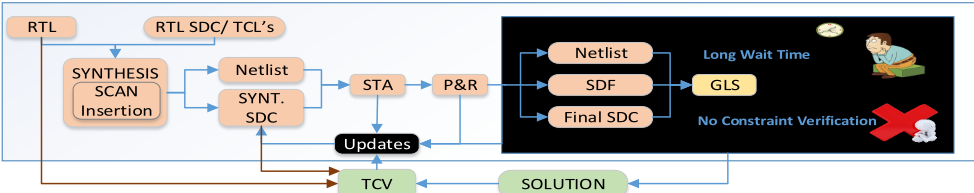
（棕色箭头标出了 TCV 流程中使用综合后 SDC 的主要更新）。仿真器解析 SDC 文件，将其与 RTL 层次结构进行交叉引用，并动态插入延迟或稳定性检查，以复现真实硬件行为。一旦出现违例，便会触发详细报告，引导设计者在错误约束于芯片中显现之前将其定位。通过在仿真中运行 SDC 文件，TCV 能够在错误或不完整的约束影响物理设计或芯片之前识别并报告这些问题，从而确保设计意图与工具假设之间保持一致。
TCV 流程在仿真环境中集成了基于 SDC 的时序例外分析。该流程包括：
为了增强对时序例外的信心并减少对手动调试的依赖，TCV 支持：
多周期路径（Multicycle Paths, MCPs）是指为信号传播而有意跨越多个时钟周期的数据路径。如图 2“多周期路径示例”所示，信号从发射触发器（FF1）到目的触发器（FF2）的跳变会经历相当于三个时钟周期的延迟，这是由架构设计决策、流水线实现，或物理设计优化过程中引入的延迟插入所导致的。
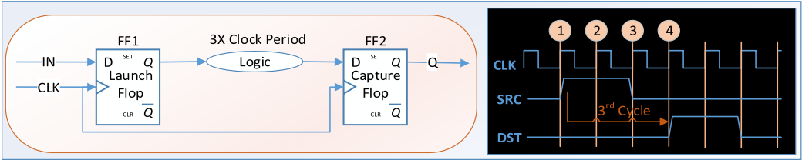
为考虑这一关系，所施加的约束为：set_multicycle_path -setup 3 -from FF1* -to FF2*。然而，如图 3“多周期路径违例与延迟插入”所示，仿真过程中可能出现不一致情况，即目的触发器在单个时钟周期内发生翻转，其原因可能是不正确的假设、误用的约束，或无意间引入的设计直通。TCV 方法会识别出这种偏差，并加上剩余延迟（3 - 1 = 2 个周期），以验证设计是否仍满足功能正确性。
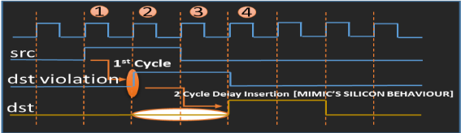
测试成功完成表明约束与设计相匹配；反之，任何失败都表明约束与实现之间存在不匹配，需要审查相应的约束或 RTL 逻辑。
该方法用于检测 'set_false_path' 约束的错误应用。理想情况下，伪路径（false path）应阻止任何信号从源端到目的端的翻转。然而在实际中，某些设计区域可能因未使用的模式或功能而被标记为伪路径，但在其他配置下仍允许发生翻转。
如“图 4：伪路径示例”所示，若某寄存器被固定为 '1'，源触发器（FF1_1）将永远不会翻转并到达目的端（FF2）。相反，如“图 5：伪路径违例”所示，若该条件未被正确定义，或伪路径被错误地保留在传播有效的某个模式中，翻转可能会错误地出现在 FF2 上。
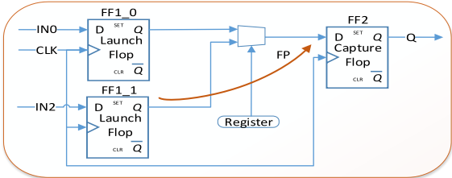
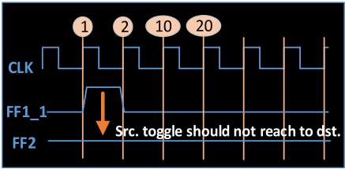
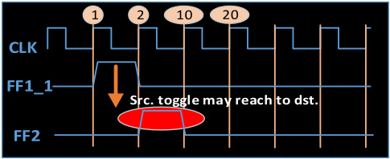
为检测此类情况，TCV 采用一种 'X' 插入技术（“图 6：带 X 插入的伪路径”），沿该路径以确定的延迟（例如 10 个周期）引入未知（'X'）值。TCV 会在可配置的持续时间（例如 100 ns）内执行稳定性检查。如果 FF1_1.Q 在定义的窗口之前影响 FF2.D，则会标记违例，提示设计者审查该约束或设计意图是否需要修正或豁免。
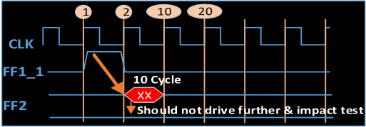
时钟组约束（例如 set_clock_groups -asynchronous -group {clk1} -group {clk2}）定义了异步时钟之间的路径。TCV 采用与伪路径检查相同的 X 传播方法来验证这些分组，确保同步时钟不会被误当作异步时钟处理。
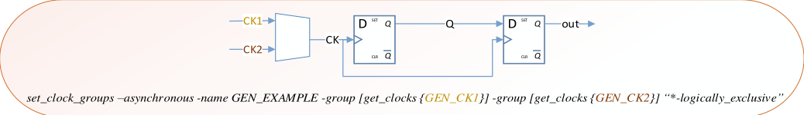
The 'set_case_analysis' constraint defines constant or conditional signal values to a list of pins or ports for timing analysis. TCV verifies these assignments by cross-checking defined constants against RTL behavior. It checks whether the signal remains constant through-out simulation if 'set_case_analysis' applied on it. Additionally, quasi-static signal detection helps to minimize false positives during X-based verification and streamline debugging.
由于伪路径（False Path）更多地出现在异步时钟组上，所分析的信号在很多时候呈现出准静态（quasi-static）的性质。当验证以在伪路径上插入 'x' 开始时，这会产生大量误报违例。
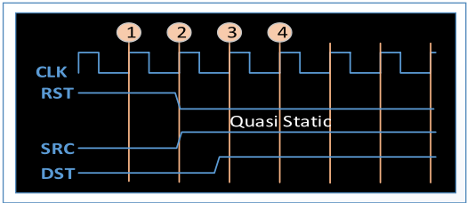
为简化调试，已实现准静态信号过滤支持。如果任何信号保持静态达 20 个或更多周期，该信号将被报告给设计者。如果确认该信号为静态，验证团队可以应用豁免（waiver），从而允许工具继续运行。
TCV 与现有仿真流程的集成引入了多项增强功能，以高效处理大规模 SoC 环境：
这些特性共同确保了在 SoC 验证环境中的鲁棒性、可扩展性以及易于采用性。
TCV 方法论已在多个项目中部署，以评估其检测硅片中已发生的时序相关问题的有效性。结果表明，TCV 成功识别出了此前逃过检测的问题，包括：
这些发现证实，TCV 能够在设计周期的更早阶段可靠地捕获关键错误，从而降低缺陷逃逸至硅片的风险。
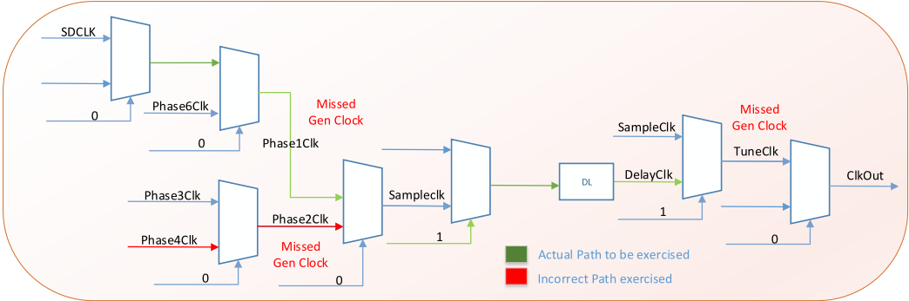
该问题是在波形分析过程中被发现的，分析结果显示延迟是相对于一个错误的时钟进行计算的。如"Figure 9: Clock Mux Structure for Missing Clock"所示，由于复杂的时钟多路复用结构，SDC 文件中缺少针对 Phase1Clk 的 'create_generated_clock' 时钟定义。类似地，Phase2Clk 的定义也缺失。
然而，MUX 选择线恒定保持为 '0'。在这种情况下，延迟计算本应参考 Phase1Clk，但实际却使用 Phase2Clk 进行延迟计算，导致波形中的延迟表示不正确。
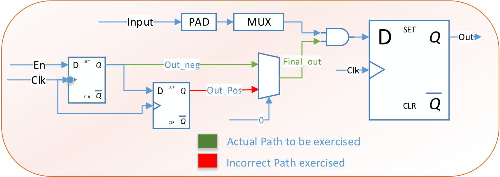
该问题是通过波形分析发现的，分析结果显示，尽管并未定义相应的约束，某条路径上仍被引入了延迟。如"Figure 10: Absence of MCP Constraint"所示，绿色实线表示对应于 mux_sel = 0 的有效路径，其起点为 out_neg 而非 out_pos。
然而，MCP 约束仅以 out_pos 作为起点进行定义。由于 out_pos 与 out_neg 同时翻转，且两个信号汇聚于同一终点，该延迟被错误地施加于 out_pos 路径，而非实际有效的 out_neg 路径。
在仿真中，观察到某些路径上出现了 'X' 插入，这些路径由于其异步时钟定义而被视为伪路径。这一现象有助于识别路径操作不当的根本原因，经分析，该原因被追溯至一个约束问题。
与这些路径相关联的时钟本应为同步时钟，却被错误地定义为异步时钟。此类错误分类可能导致这些路径的时序分析被遗漏，并可能在硅片中引发严重的功能失效。
在仿真中，观察到某些被识别为多周期路径（MCP）的路径上出现了延迟插入，这些插入是在假定时钟为同步行为的前提下施加的。经详细分析，该问题被追溯至一处约束缺陷：源时钟与目的时钟在本质上均为异步时钟，却被错误地当作同步时钟处理，从而导致 MCP 约束被不当应用。
在仿真中，在该路径上观察到了 'x' 插入，其中源时钟与目的时钟均被视为异步时钟，并最终被认定为假路径（False Path）。经进一步调试，该问题被确认为约束中的一处疏漏，即所施加的源时钟与目的时钟实为同一时钟。
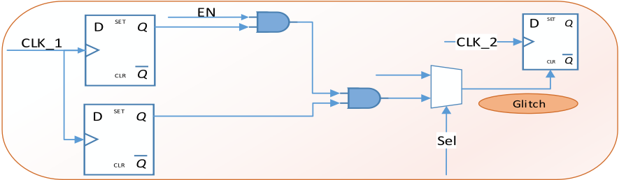
如“图 11：毛刺识别”（Figure 11: Identification of Glitches）所示，源信号跨越不同时钟域、途经多级组合逻辑进行传输，因而易受毛刺影响。在 CDC 分析中，此类路径通常基于准静态或稳定控制的假设而被豁免。
TCV 在这些路径上注入毛刺，以验证目的端的恢复能力。若目的端未能恢复——正如本例中所观察到的情况——则该路径需要进行修正。
在任何时钟域交叉设计中，双同步器（Double Synchronizer）的主要功能是通过降低亚稳态信号从一个时钟域传递到另一个时钟域的概率来避免亚稳态。在这种情况下，第一级触发器可能进入亚稳态，而第二级触发器则为信号提供额外的时间，使其在输出被捕获之前稳定到稳定的逻辑电平（0 或 1）。
该行为已在仿真中得到成功验证：仿真中观察到第一级触发器进入亚稳态，而第二级触发器为信号提供了额外的稳定时间，且不会将亚稳态信号传递到第二级触发器的输出。
采用 TCV 替代传统门级仿真（GLS）可带来多项可衡量的收益：
改进，表明虽然 GLS 往往需要 1-2 天，TCV 却能在 0.3-0.5 小时内实现同等的调试效果，相当于调试时间减少了 80%。
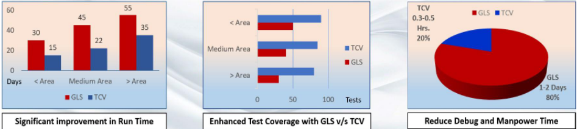
通过在寄存器传输级（RTL）阶段集成 SDC 验证，时序约束验证（Timing Constraint Verification, TCV）方法学为验证片上系统（SoC）设计中的时序例外提供了一种结构化、仿真驱动的方法。该方法可确保高质量的约束交付，缩短上市时间，并将流片后风险降至最低。所观察到的主要收益包括：
随着半导体行业不断追求更激进的时间进度和更高的集成密度，像 TCV 这样的方法学对于实现一次流片成功和保持竞争优势将变得至关重要。
时序约束验证（TCV）流程在自动化和改进方面具有巨大潜力。TCV 的未来发展将聚焦于以下几个关键领域：
| 0 | 1 |
|---|---|
| TCV | Timing Constraint Verification |
| GLS | Gate Level Simulation |
| FP | False Path |
| MCP | Multi Cycle Path |
| STA | Static Timing Analysis |
| SDF | Standard Delay Format |
| SDC | Synopsys Design Constraints |
| 0 | 1 |